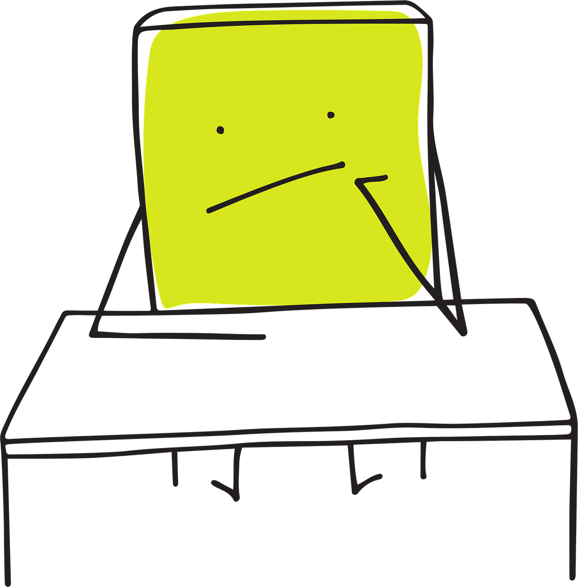
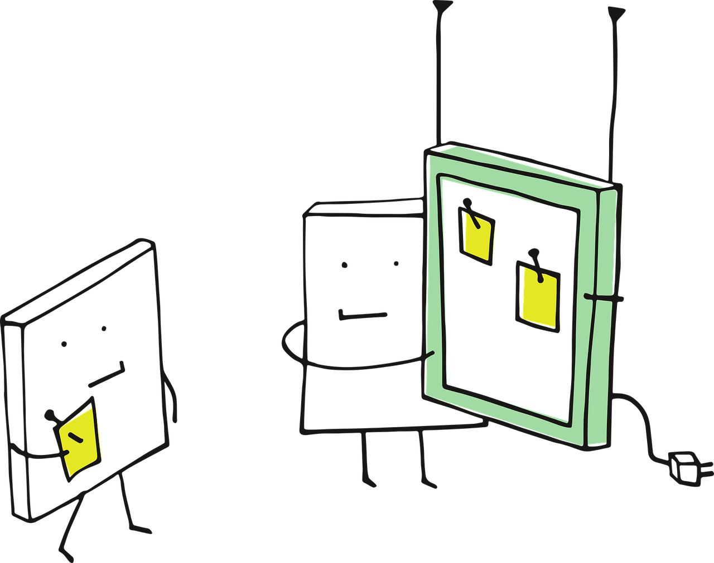
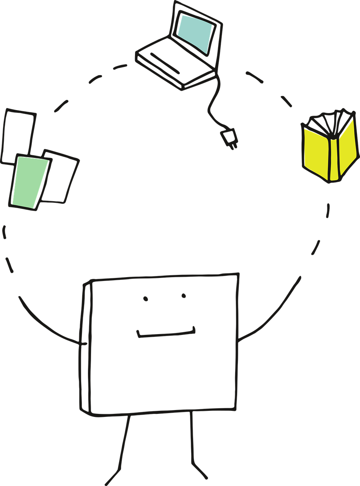
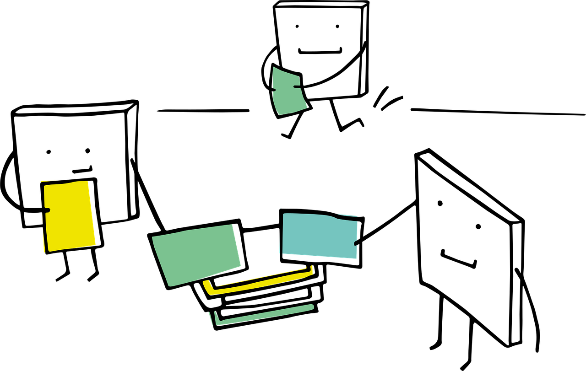

Course Outline
1 Course Rationale
Correlation does not imply causation.
Lübke et al. (2020) have indicated that the notion described above can be addressed through an understanding of concepts in causal inference. However, as educators in statistics, we have not fully covered these topics in our introductory courses (Cummiskey et al. 2020). Therefore, we need to consider developing undergraduate courses that focus on teaching these key concepts. The Guidelines for Assessment and Instruction in Statistics (GAISE) state that students should be prepared to handle inquiries that require multivariate thinking (Wood et al. 2018). However, Lübke et al. (2020) point out that modelling multivariate data can be misleading, particularly due to issues like confounding. Consequently, it is crucial for students to begin reflecting more on the data generation process to draw meaningful conclusions. In this context, implementing a course like the one outlined in this deliverable would be a significant step toward achieving this goal.

2 Course Description
This course provides an introduction to the principles and methods of causal inference. We will go beyond mere correlation to address questions about cause and effect using real-world data. The course follows a structured roadmap composed of eight stages, starting with the fundamentals of constructing and interpreting causal diagrams, which are essential for understanding any data-driven problem where causality is a key inquiry. From there, we will define outcome counterfactuals and apply statistical techniques to estimate causal parameters. Special emphasis will be placed on understanding the assumptions underlying any given causal model while critically evaluating the corresponding claims in real-life scenarios. Furthermore, the course combines theoretical concepts, hands-on computational exercises, and case studies, allowing students to develop the necessary tools to design and analyze causal inquiries effectively.
3 High-Level Course Goals

This undergraduate course is designed to have eight high-level learning goals. These goals align with the cognitive domain levels outlined by Bloom et al. (1956), as defined by Anderson and Krathwohl (2001). More details about these levels can be found in the course lesson plan.
- Identify and define causal questions across diverse contexts, while recognizing the distinction between association and causation (remember and apply levels, respectively).
- Translate research questions into the causal roadmap framework (understand level).
- Build directed acyclic graphs (DAGs) to represent knowledge about causal inquiries (apply level).
- Apply suitable causal inference designs (experimental, quasi-experimental, and observational) and estimation strategies (such as inverse probability weights, G-estimation or causal mediation analysis) to real-world data (apply level).
- Analyze real-world data through the causal roadmap, connecting assumptions, identifiability, estimation, and interpretation in a coherent workflow (analyze level).
- Assess and criticize causal claims in published research by appraising assumptions, study design, methods, and interpretation (evaluate level).
- Communicate the results of a causal analysis to both technical and non-technical audiences through clear storytelling, effective visualization, and transparent discussion of uncertainty (create level).
- Execute a complete causal inference project (from question formulation to presentation) via the causal roadmap while integrating critical thinking, methodological rigour, and scholarly communication (create level).
4 Pre-requisite and Co-requisite Courses
This fourth-year course requires a strong foundation in statistics, probability, and data modelling, built through earlier undergraduate coursework. Therefore, students should already be familiar with introductory statistical inference, regression modelling, and probability theory. Additionally, having a parallel understanding of experimental design is beneficial for interpreting and evaluating causal claims. The prerequisite and co-requisite courses ensure that students have the conceptual and technical fluency necessary to understand and apply causal inference frameworks effectively.

4.1 Mandatory
- Second-Year Statistical Inference: This course must provide students with a solid foundation in classical statistical tools such as hypothesis testing and confidence intervals. Familiarity with \(z\)-tests, \(t\)-tests, and Chi-squared tests would enable students to understand how causal claims are assessed statistically. Exposure to simulation-based methods (such as bootstrapping and permutation tests) will be beneficial, as these resampling techniques help estimate uncertainty when analytic solutions are complex or unavailable.
- Second or Third-Year Probability Theory: This course would provide a good grasp of probability concepts, including independence, conditional probability, and the properties of random variables. Previous exposure to key probability distributions (e.g., Bernoulli, Binomial, Normal, Exponential) and summary statistics (e.g., means and variances) would support both graphical and potential-outcome-based approaches to causal inference. This background would enable students to reason formally about uncertainty and probabilistic dependencies in causal structures.
- Third-Year Regression Analysis: A solid understanding of ordinary least-squares (OLS) and binary logistic regression would be essential. These skills would allow students to model relationships between variables, which is vital for adjusting confounders or estimating treatment effects. These techniques serve as the analytical foundation for many causal inference methods, including potential outcomes frameworks. A reasonable understanding of modelling assumptions, estimation procedures, and model diagnostics in regression analysis will be expected.
4.2 Co-requisite
- Fourth-Year Experimental Design: A parallel course in experimental design would offer essential theoretical insights into the gold standard of causal inference: the randomized controlled trial (RCT). Students would gain an understanding of the principles of randomization, blocking, and replication. This co-requisite course also connects to the causal inference discussions on the limitations of RCTs and the challenges involved in applying experimental logic to observational data.
5 Duration
The course is planned to be taught over the course of thirteen weeks (2 lectures per week, each with 1.5 hours as duration).
6 Course Format
This course is designed to integrate theoretical concepts with practical application, giving students a thorough understanding of causal inference methods. The lectures cover foundational topics such as DAGs, counterfactual reasoning, potential outcomes, identification strategies, and the assumptions that underlie causal estimands. Furthermore, more advanced subjects like inverse probability weighting, G-estimation methods, and causal mediation analysis are included. Some lecture sessions will provide students with hands-on experience using real datasets in R (R Core Team 2024). Students will implement estimators, conduct sensitivity analyses, and visualize causal effects during these practical sessions.
7 Course Assessment Structure
The summative assessment structure of this course is composed of the following elements:
- Biweekly problem sets to reinforce both conceptual understanding and methodological proficiency from weeks 1 to 8, totalling four assignments and accounting for 30% of the course’s final grade.
- The first group project consisting of an appraisal of a published causal study via the causal coadmap accounting for 30% of the course’s final grade.
- The second group project consisting of an analysis of a publicly available dataset via the causal roadmap accounting for 40% of the course’s final grade.
